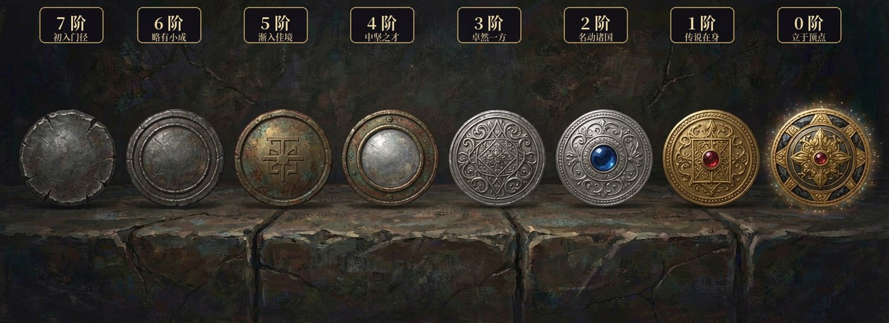
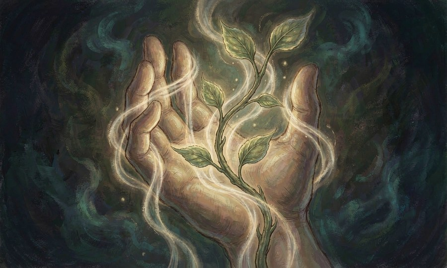
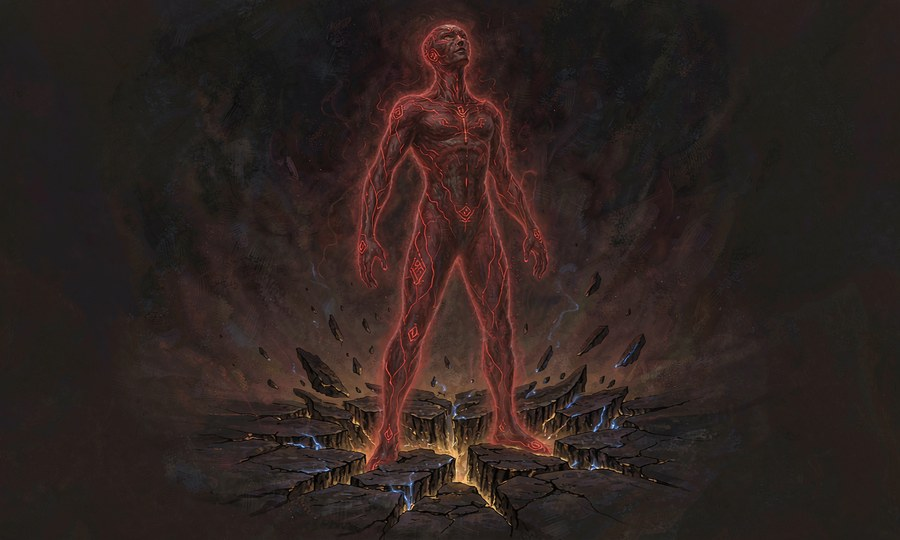
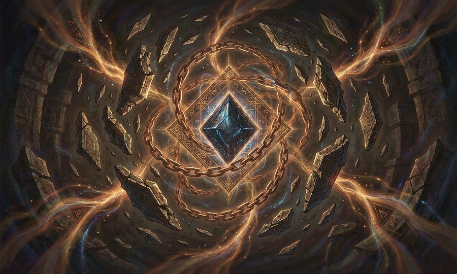

空间操纵 6 种

执契者阶位章纹 —— 自 0 阶至 7 阶，阶级越高，章纹越盛
涉及瞬移、逃离、领域封锁、路径开辟与独立空间创造。
契约·益契约·域契约·持契约·速契约·附契约·守契约·攻契约·界
跃行
于视线或想象所及之处进行短距空间跳跃，可携带他人同行。消耗较大。
维持一次移动即消耗，可携带多人。基础18 MP
技能树 · 0 → 7 阶 （每阶三选一）
契约·益契约·域契约·持契约·速契约·附契约·守契约·攻契约·界 7阶
契约·界携全队 8 人跳至任意已到过之处；代价：反噬 3d6 + 透支 2 回合【每日 1 次】 契约·域可在任意位置留下长期门扉坐标
丧犬
濒死之际自动触发，随即将自身传送至附近安全之处，落点不可控。触发后极度虚弱。
维持极短触发，使用后身体会极度虚弱，难以立即战斗。基础20 MP
技能树 · 0 → 7 阶 （每阶三选一）
契约·益契约·域契约·持契约·速契约·附契约·守契约·攻契约·界 7阶
契约·界可跳至任意已知坐标；代价：反噬 3d6 + 透支 2 回合【每日 1 次】 契约·域为全队各留一次逃生跳跃
6阶
契约·界落点可精确指定，不再随机；代价：力竭 1 回合 契约·域可携带 8 人
生者栖所
于隐蔽处开辟一处独立空间，活物皆可入内，外界无法察觉或侵入。内中之人亦不能自行离开。
维持低阶约15分钟，高阶可维持数日，且栖所可随使用者移动。基础16 MP
技能树 · 0 → 7 阶 （每阶三选一）
契约·益契约·域契约·持契约·速契约·附契约·守契约·攻契约·界 7阶
契约·界展开即庇护全队：3 回合内所受伤害延后结算，回合结束后统一结算；代价：反噬 3d6 + 透支 2 回合【每日 1 次】 契约·域同时维持 3 处栖所
6阶
契约·界空间内 1 小时内完全恢复，离开时全队各获 3d6 临时护盾；代价：力竭 1 回合 契约·域可为他人创造长期栖所（1 个月），独立于持有者
4阶
契约·守空间内可恢复全部 HP 与 MP，需 1 小时 契约·域可在空间内留下出口坐标
迷途
圈定一片区域并指定终点，入内者丧失方向感。唯有抵达终点方能离开。
维持低阶约15分钟，高阶可覆盖一处庭院并持续更久。基础16 MP
技能树 · 0 → 7 阶 （每阶三选一）
契约·益契约·域契约·持契约·速契约·附契约·守契约·攻契约·界 7阶
契约·界全区域强制迷失，直至终点被找到；代价：反噬 3d6 + 透支 2 回合【每日 1 次】 契约·域同时布下 5 片区域，可为友方预设安全通行路线
6阶
契约·界区域内禁绝一切方向感与传送；代价：力竭 1 回合 契约·域可覆盖一整片建筑群
封
以结界封锁一片区域，其中之人不得离开。高阶后可压制乃至禁止其契约。
维持封锁强度随距离和人数变化，持续数秒到约半小时不等。基础20 MP
技能树 · 0 → 7 阶 （每阶三选一）
契约·益契约·域契约·持契约·速契约·附契约·守契约·攻契约·界 7阶
契约·界结界内契印崩解：所有契约暂时失效 3 回合；代价：反噬 3d6 + 透支 2 回合【每日 1 次】 契约·域为全队布置可共用的结界网（最多 5 处，跨日维持）
6阶
契约·界结界内一切传送与出入无效，直至解除；代价：力竭 1 回合 契约·域同时封 5 片，或封住整座小镇
幽暗之路
于脚下铺出绝对寂静的通路，光与声皆被吞没。队伍无声通行，敌人无法出声求援。
维持通路持续至走出或主动关闭。基础14 MP
技能树 · 0 → 7 阶 （每阶三选一）
契约·益契约·域契约·持契约·速契约·附契约·守契约·攻契约·界 7阶
契约·界把整片区域拖入绝对寂静：敌人失能 2 回合，且每回合 4d6 直至离开；代价：反噬 3d6 + 透支 2 回合【每日 1 次】 契约·域为全队开辟一条不可被追踪的远程通路
6阶
契约·界范围内敌人无法呼吸、每回合 3d6，直至离开；代价：力竭 1 回合 契约·域通路贯穿整片地形
3阶
契约·域范围再 +6m
契约·攻区域内敌人 2d6 暗蚀，并失聪 1 回合
元素与物质操控 13 种

操控火、水、雷、土等自然元素、声波，以及物质的形态变化。
契约·益契约·域契约·持契约·速契约·附契约·守契约·攻契约·界
涓流
引水成流，化作高压水刃。亦可用于灭火、清洗与供水。
维持引水后持续流动，直至枯竭或使用者切断引导。基础16 MP
技能树 · 0 → 7 阶 （每阶三选一）
契约·益契约·域契约·持契约·速契约·附契约·守契约·攻契约·界 7阶
契约·界掀起巨浪：全区域 5d8 并冲散阵型；代价：反噬 3d6 + 透支 2 回合【每日 1 次】 契约·域引水覆盖战场，为全队创造水域优势
6阶
契约·界引动地脉：10m 内水压爆发 4d8，敌人倒地；代价：力竭 1 回合 契约·域可影响整片湖区
雷鸣
以掌心电弧击打单体，或召雷暴覆盖一片区域。着金属者受伤更重。
维持闪电为一次性释放，雷暴可持续数秒。基础18 MP
技能树 · 0 → 7 阶 （每阶三选一）
契约·益契约·域契约·持契约·速契约·附契约·守契约·攻契约·界 7阶
契约·界雷暴覆城：全区域 5d8 且障碍崩碎；代价：反噬 3d6 + 透支 2 回合【每日 1 次】 契约·域全队获雷电免疫并共享雷击目标
6阶
契约·界天雷落定：单体 5d8 且无视护甲；代价：力竭 1 回合 契约·域雷暴覆盖 10m 内全部敌人
浮光
化身强光致盲敌人，或以光线折出虚假分身。分身无实体，不能伤敌。
维持光效持续至智力耗尽。基础14 MP
技能树 · 0 → 7 阶 （每阶三选一）
契约·益契约·域契约·持契约·速契约·附契约·守契约·攻契约·界 7阶
契约·界聚光成刃：单体 7d8 并无视掩蔽；代价：反噬 3d6 + 透支 2 回合【每日 1 次】 契约·域为全队各制一个分身，全员虚实难辨
6阶
契约·界爆闪：10m 内敌人失明 3 回合；代价：力竭 1 回合 契约·域分身覆盖战场，全队共享
猩红盛宴
抽取周身之血凝为鞭刃或血雾，刃可伤人，雾令人窒息。无血可取时，只得取自身之血代替。
维持血雾消散较快，血刃需持续握持。基础16 MP
技能树 · 0 → 7 阶 （每阶三选一）
契约·益契约·域契约·持契约·速契约·附契约·守契约·攻契约·界 7阶
契约·界血宴：吸干一具尸体的血，转为一击 7d8；代价：反噬 3d6 + 透支 2 回合【每日 1 次】 契约·域全队共享吸血，受伤自动回复
6阶
契约·界血潮翻涌：10m 内敌人 5d8 且流血；代价：力竭 1 回合 契约·域血雾覆盖战场，敌人每回合 2d6
污迹
于目标留下无形污痕，使其所受治疗减半，装备临时失灵。
维持印记可留存数小时，经强烈净化方可消除。基础14 MP
技能树 · 0 → 7 阶 （每阶三选一）
契约·益契约·域契约·持契约·速契约·附契约·守契约·攻契约·界 7阶
契约·界污秽加身：单体 7d8，且目标 1 回合内无法被治疗；代价：反噬 3d6 + 透支 2 回合【每日 1 次】 契约·域全队共享印记视野
6阶
契约·界污迹扩散：10m 内敌人皆被标记，装备失效 3 回合；代价：力竭 1 回合 契约·域印记跨场景留存 1 日
编织法
以魔力织出可用的布与绳，能捆绑、格挡、缝合伤口、架设桥索。织成之物逾时即散。
维持编织物持续至断裂或主动解除。基础10 MP
技能树 · 0 → 7 阶 （每阶三选一）
契约·益契约·域契约·持契约·速契约·附契约·守契约·攻契约·界 7阶
契约·界以丝为牢：单体完全禁锢，直到你解除；代价：反噬 3d6 + 透支 2 回合【每日 1 次】 契约·域织出可承重的通路，全队通行
6阶
契约·界万丝缠身：10m 内敌人被缚 3 回合；代价：力竭 1 回合 契约·域为全队织出护甲，AC +2
2阶
契约·攻绳缚：力量 DC 13 否则束缚 1 回合 风炎
召携火星之风拂过目标，可助燃成灾，亦可降温灭火。风助火势，火自蔓延。
维持风止则效果消。基础14 MP
技能树 · 0 → 7 阶 （每阶三选一）
契约·益契约·域契约·持契约·速契约·附契约·守契约·攻契约·界 7阶
契约·界焚风：全区域 5d8 并点燃可燃物；代价：反噬 3d6 + 透支 2 回合【每日 1 次】 契约·域为全队附加 1d6 火焰伤害
6阶
契约·界风炎肆虐：10m 内 5d8 并持续引燃；代价：力竭 1 回合 契约·域范围覆盖整片战场
北国月相
以月光凝出冰矢与寒盾。天阴月晦之时，威力大减。
维持冰晶命中后即碎裂，护盾持续至破裂。基础14 MP
技能树 · 0 → 7 阶 （每阶三选一）
契约·益契约·域契约·持契约·速契约·附契约·守契约·攻契约·界 7阶
契约·界极寒月相：10m 内 5d8 且全部冰封；代价：反噬 3d6 + 透支 2 回合【每日 1 次】 契约·域为全队披上寒甲，AC +2
6阶
契约·界月华凝刃：单体 5d8 并冰封 2 回合；代价：力竭 1 回合 契约·域冰墙立于战场，分割阵型
星速
借星辰之力提升移动与反应，短时内疾行如星。结束之后略感脱力。
维持加速持续数秒至半分钟不等。基础12 MP
技能树 · 0 → 7 阶 （每阶三选一）
契约·益契约·域契约·持契约·速契约·附契约·守契约·攻契约·界 7阶
契约·界流星过境：一回合内连续行动两次并穿越战场；代价：反噬 3d6 + 透支 2 回合【每日 1 次】 契约·域全队本场先攻 +2、移速 +6m
6阶
契约·界星轨疾行：本回合移动四次，每次 +6m；代价：力竭 1 回合 契约·域全队移动 +6m 且先攻 +2
大地疮痍
震裂脚下土地，造出沟壑、塌陷与岩柱，可用以阻敌，亦可伤敌。地形之变长期留存。
维持地质变化长期存在（1 个月以上）。基础18 MP
技能树 · 0 → 7 阶 （每阶三选一）
契约·益契约·域契约·持契约·速契约·附契约·守契约·攻契约·界 7阶
契约·界地脉断裂：全区域 5d8 并改变地势；代价：反噬 3d6 + 透支 2 回合【每日 1 次】 契约·域为全队构筑长期工事
6阶
契约·界大地崩裂：10m 内 5d8 且全员倒地；代价：力竭 1 回合 契约·域重塑地形，为己方造出要塞
霜羽
背后凝出冰翼，于寒冷之地可飞行。愈冷则愈速愈灵，温暖之地不能起飞。
维持飞行期间持续消耗智力，温度骤降时可暂停消耗。基础14 MP
技能树 · 0 → 7 阶 （每阶三选一）
契约·益契约·域契约·持契约·速契约·附契约·守契约·攻契约·界 7阶
契约·界霜天翱翔：本场持续飞行，俯冲 7d8；代价：反噬 3d6 + 透支 2 回合【每日 1 次】 契约·域为全队凝出冰翼
6阶
契约·界暴风雪中极速俯冲：单体 5d8；代价：力竭 1 回合 契约·域携全队飞越险地
咏叹调
以乐器奏出声波杀伤目标，可透掩体与薄墙。声波呈锥形扩散，正面同伴亦受其害。
维持演奏期间持续造成影响，停止后效果消失。基础16 MP
技能树 · 0 → 7 阶 （每阶三选一）
契约·益契约·域契约·持契约·速契约·附契约·守契约·攻契约·界 7阶
契约·界一音定生死：单体 6d8 且击碎其施法；代价：反噬 3d6 + 透支 2 回合【每日 1 次】 契约·域全队攻击附加 1d6 声波伤害
6阶
契约·界终曲：10m 内 5d8 且失聪 2 回合；代价：力竭 1 回合 契约·域全区域覆盖，友方免疫
余烬挽歌
视目标的血肉与灵魂为可燃之纸。一旦燃起极难扑灭，其伤势亦久难愈合。
维持视火势蔓延程度而定，高阶级可长期附着在特定目标身上。基础18 MP
技能树 · 0 → 7 阶 （每阶三选一）
契约·益契约·域契约·持契约·速契约·附契约·守契约·攻契约·界 7阶
契约·界化为焦粉：单体 7d8，且目标本回合内无法被治疗与驱散；代价：反噬 3d6 + 透支 2 回合【每日 1 次】 契约·域全队攻击附带余烬，敌人受治疗量 −50%
6阶
契约·界挽歌终章：单体 5d8，且目标 1 回合内无法被治疗；代价：力竭 1 回合 契约·域10m 内敌人皆被余烬标记
精神与情绪影响 8 种

直接干涉目标的精神和情绪，包括恐惧、喜悦、语言控制等。
契约·益契约·域契约·持契约·速契约·附契约·守契约·攻契约·界
轻声
于近处低语一句，对方不知不觉，事后不记其声，只依言行事一次。此为暗示而非命令，令其行明显违逆本性之事则无效。
维持一句话即刻生效。基础14 MP
技能树 · 0 → 7 阶 （每阶三选一）
契约·益契约·域契约·持契约·速契约·附契约·守契约·攻契约·界 7阶
契约·界言出即行：一人整场听命于一个长期指令；代价：反噬 3d6 + 透支 2 回合【每日 1 次】 契约·域区域内敌人各受一句指令
6阶
契约·界一句命定：对方必执行一个明确动作，意志 DC 18 抵抗；代价：力竭 1 回合 契约·域对 10m 内全队各说一句
缄言
剥夺目标的表达能力：不可言说、书写或示意。尚能行动作战，然不能施法、呼援与传信。
维持一次使用可维持一次短暂对话的时间。基础12 MP
技能树 · 0 → 7 阶 （每阶三选一）
契约·益契约·域契约·持契约·速契约·附契约·守契约·攻契约·界 7阶
契约·界永缄：一人整日无法表达；代价：反噬 3d6 + 透支 2 回合【每日 1 次】 契约·域区域内敌人皆被缄口
6阶
契约·界全场噤声：10m 内无人能发声；代价：力竭 1 回合 契约·域可指定范围内友方不受影响
言语天国
当面开口，以精神压强制目标执行一项明确指令。对方自知受制，只能以魅力抗衡。消耗极大。
维持一次指令即刻生效，持续直至指令完成。基础20 MP
技能树 · 0 → 7 阶 （每阶三选一）
契约·益契约·域契约·持契约·速契约·附契约·守契约·攻契约·界 7阶
契约·界言灵降世：一人整场执行一个长期指令；代价：反噬 3d6 + 透支 2 回合【每日 1 次】 契约·域区域内敌人各受一令
6阶
契约·界一句天宪：一人必执行一个明确动作，意志 DC 18 抵抗；代价：力竭 1 回合 契约·域10m 内全队各受一令
心灵共振
与数人结成心灵通话，不出声亦可交流，封口之术无从拦截。仅传讯息，不能代其思考。
维持连接持续至使用者主动断开。基础10 MP
技能树 · 0 → 7 阶 （每阶三选一）
契约·益契约·域契约·持契约·速契约·附契约·守契约·攻契约·界 7阶
契约·益MP −55%，同一时刻可维持 1 条跨城链接 契约·界万念归流：全队共享感知与检定，且免疫精神攻击，持续 3 回合；代价：反噬 3d6 + 透支 2 回合【每日 1 次】 契约·域为队伍建立长期链接（1 个月）
6阶
契约·界心灵共域：全队思维合流，一回合内同步行动；代价：力竭 1 回合 契约·域可临时接入他人的思绪
影中梦
借影子潜入他人梦境，可窥其心中所想、所惧、所藏；亦可毁其梦，令梦主神伤。不能改其心志，亦不能植入记忆。
维持停留时间与梦主人意识强度相关。基础18 MP
技能树 · 0 → 7 阶 （每阶三选一）
契约·益契约·域契约·持契约·速契约·附契约·守契约·攻契约·界 7阶
契约·界梦魇尽碎：击碎一人的梦，他受 7d8 精神伤害且本场陷入恐惧；代价：反噬 3d6 + 透支 2 回合【每日 1 次】 契约·域整村或整队同时入梦，一夜之间问遍所有人
6阶
契约·界碎梦：当场击碎一人的梦，他惊醒时受 5d8 精神伤害并失去本轮行动；代价：力竭 1 回合 契约·域为全队读出目标心中最怕的那样东西
0阶
契约·益MP −25%，可看清梦中最显眼的那样东西 契约·域可潜入 6m 内沉睡者的梦
绘色
以色彩涂改他人情绪，可将恐惧化为勇气、冷静化为暴怒。着色随时间褪回原样。
维持颜色可短暂留存，高阶可印于物品上。基础16 MP
技能树 · 0 → 7 阶 （每阶三选一）
契约·益契约·域契约·持契约·速契约·附契约·守契约·攻契约·界 7阶
契约·界涂改灵魂：一人长期改变一种情绪倾向；代价：反噬 3d6 + 透支 2 回合【每日 1 次】 契约·域整片战场敌人同时被刷色
6阶
契约·界一色倾覆：10m 内敌人全部陷入绝望（攻击掷劣势）；代价：力竭 1 回合 契约·域全队刷上「坚定」
0阶
契约·益MP −25%，可看出对方正被什么情绪主导 契约·域射程 +6m
灵徙
占据一具新死之躯，连同其契约一并接手。代价为自身记忆严重流失：久远之事尚存，近日之人与事或尽数遗忘。
维持直至意识主动离开或原躯体再次死亡。基础24 MP
技能树 · 0 → 7 阶 （每阶三选一）
契约·益契约·域契约·持契约·速契约·附契约·守契约·攻契约·界 7阶
契约·界万灵之徙：同时占据 3 具躯体分头行动；代价：反噬 3d6 + 透支 2 回合【每日 1 次】 契约·域可为同伴保存备用躯体
6阶
契约·益MP −45%，占据后可保留自身契约的被动 契约·界夺舍：占据一名刚死的强敌，完整继承其契约；代价：力竭 1 回合 契约·域可预存一具备用躯体
无面
更换面具以转换状态，每张面具各赋一套战法，叠加佩戴则效果亦叠加。面具之下，真身不可辨。
维持持续佩戴即生效，摘下后效果消失。基础14 MP
技能树 · 0 → 7 阶 （每阶三选一）
契约·益契约·域契约·持契约·速契约·附契约·守契约·攻契约·界 7阶
契约·界千面：可复制你见过的任一状态并施加于己；代价：反噬 3d6 + 透支 2 回合【每日 1 次】 契约·域全队共享你当前面具的全部效果
6阶
契约·界无面之王：同时佩戴 6 张面具并融合效果；代价：力竭 1 回合 契约·域全队各获 1 张面具
感知与信息 5 种
增强感官、获取隐秘信息、侦测陷阱和追踪目标。
契约·益契约·域契约·持契约·速契约·附契约·守契约·攻契约·界
契约秘闻
以肢体触碰物品，读取其经历过的片段。可由此得知原主之隐秘。
维持读取持续数秒到15分钟不等，之后物品沉默。基础12 MP
技能树 · 0 → 7 阶 （每阶三选一）
契约·益契约·域契约·持契约·速契约·附契约·守契约·攻契约·界 7阶
契约·益MP −55%，可读取物品最近一次被触碰者 契约·界可逼问出被封印的记忆，甚至追溯契约来源；代价：反噬 3d6 + 透支 2 回合【每日 1 次】 契约·域团队共享回响，全员可见
6阶
契约·界可读取物品被毁前的最后一幕，完整还原；代价：力竭 1 回合 契约·域同时读取整片废墟的全部物品
靶心
锁定一名目标，此后无论黑暗、迷雾或幻象，皆能感知其方位与动向。
维持锁定持续至目标消失或主动解除。基础10 MP
技能树 · 0 → 7 阶 （每阶三选一）
契约·益契约·域契约·持契约·速契约·附契约·守契约·攻契约·界 7阶
契约·益MP −55%，命中 +4 且伤害 +2d6 契约·界被标记者 1 小时内出现在任何地方都能被你感知；代价：反噬 3d6 + 透支 2 回合【每日 1 次】 契约·域全队共享锁定视野
6阶
契约·界锁定目标无法通过任何手段隐藏或传送逃逸；代价：力竭 1 回合 契约·域锁定范围覆盖整座小镇
应验无常
许下关于未来的小愿，有几率成真，愿望愈模糊愈易应验。成真者少而落空者多。
维持愿望通常在一天内应验，极少数延迟更长。基础22 MP
技能树 · 0 → 7 阶 （每阶三选一）
契约·益契约·域契约·持契约·速契约·附契约·守契约·攻契约·界 7阶
契约·界命运的容错：一次失败检定改为重掷并取高【每日 1 次】；代价：反噬 3d6 + 透支 2 回合 契约·域为整支队伍覆盖一整日的命运顺遂
6阶
契约·界愿望必成：指定愿望必定实现一次【每日 1 次】，实现方式由世界裁定；代价：力竭 1 回合 契约·域全队各许一愿
门之钥
得见他人看不见的「门」，推开即达另一处或别界。门后未必为所想之地。
维持开门后持续数秒至片刻，随后门自动关闭。基础18 MP
技能树 · 0 → 7 阶 （每阶三选一）
契约·益契约·域契约·持契约·速契约·附契约·守契约·攻契约·界 7阶
契约·界可在两点之间开一扇双向往返的门，维持 1 小时；代价：反噬 3d6 + 透支 2 回合【每日 1 次】 契约·域为全队各开一扇应急门
6阶
契约·界可强行开启一扇未上锁的门通往指定地点；代价：力竭 1 回合 契约·域携全队穿行
锐视
短时间内视听觉极度敏锐，远处细节与细微动静皆不能逃过。时效一过便复原。
维持持续极短时间，结束后有轻微疲惫。基础10 MP
技能树 · 0 → 7 阶 （每阶三选一）
契约·益契约·域契约·持契约·速契约·附契约·守契约·攻契约·界 7阶
契约·益MP −55%，侦查 +3 且持续整场战斗 契约·界全场透视：一切隐匿、伪装、传送落点无所遁形；代价：反噬 3d6 + 透支 2 回合【每日 1 次】 契约·域全队共享，覆盖整片战场
6阶
契约·界短时间内看清一切隐匿与虚妄，包含幻术与暗相契约的痕迹；代价：力竭 1 回合 契约·域共享给全队
防御与自保 6 种

承受与转移伤害、结界防护与绝对安全区的创造。
契约·益契约·域契约·持契约·速契约·附契约·守契约·攻契约·界
茧
以丝将自身或他人裹入壳中，外界不可触及，壳内之人亦不能行动。此为护身，非为攻敌。
维持约15分钟至一小时，随阶级提升可延长。基础14 MP
技能树 · 0 → 7 阶 （每阶三选一）
契约·益契约·域契约·持契约·速契约·附契约·守契约·攻契约·界 7阶
契约·界绝对隔绝：全队隐身于茧中，外界无法侦测与攻击，直至你解除（最长 3 回合）；代价：反噬 3d6 + 透支 2 回合【每日 1 次】 契约·域为全队各结一层茧
6阶
契约·界万丝护壳：10m 内全队各获一层茧，可承受 4d6 伤害；代价：力竭 1 回合 契约·域茧可随你移动
虫蜕
受击之际蜕去一层皮，抵消该次伤害。蜕后极度虚弱，短时内不可再蜕。
维持一次性消耗，蜕皮后立即进入极度虚弱期。基础12 MP
技能树 · 0 → 7 阶 （每阶三选一）
契约·益契约·域契约·持契约·速契约·附契约·守契约·攻契约·界 7阶
契约·界不死之蜕：本场可将一次致命伤害抵消至 1d6，之后极度虚弱 3 回合；代价：反噬 3d6 + 透支 2 回合【每日 1 次】 契约·域全队共享一次集体蜕皮
6阶
契约·界九蜕：本场可抵消 3 次伤害，每次抵消后陷入 1 回合虚弱；代价：力竭 1 回合 契约·域全队各获一次蜕皮机会
4阶
契约·守蜕皮后对同类型伤害抗性：伤害减半 1 回合 契约·域可为 3 人各留一次
截断
于身前立起防御，将迎面而来的物理与能量攻击截停、偏折或消解。不能截停者径直穿透。
维持维持时间极短，但防御力极强。基础16 MP
技能树 · 0 → 7 阶 （每阶三选一）
契约·益契约·域契约·持契约·速契约·附契约·守契约·攻契约·界 7阶
契约·界绝对截断：本回合内全队各截停 3 次来袭攻击；代价：反噬 3d6 + 透支 2 回合【每日 1 次】 契约·域可截停整片战场的攻击
6阶
契约·界断界：3 回合内全队各可截停 2 次来袭攻击；代价：力竭 1 回合 契约·域为全队展开一道防线
囚徒
指定一人，其受伤时由己身代为承担，分量自定。代价皆由己身支付。
维持一次性作用，承伤比重可调节。基础18 MP
技能树 · 0 → 7 阶 （每阶三选一）
契约·益契约·域契约·持契约·速契约·附契约·守契约·攻契约·界 7阶
契约·益MP −55%，每日 1 次可完全抵消一次转移 契约·界罪囚：将一次致命伤害转移至自身，本次伤害减半；代价：反噬 3d6 + 透支 2 回合【每日 1 次】 契约·域全队伤害由你统一再分配
6阶
契约·界同命：本回合由你代为承担全队所受伤害，且每次转移消耗 4 MP；代价：力竭 1 回合 契约·域为全队建立链接
斥力
以自身为中心形成推力场，可弹开攻击、人与物件。愈近愈强。
维持持续存在，消耗随斥力强度增加。基础16 MP
技能树 · 0 → 7 阶 （每阶三选一）
契约·益契约·域契约·持契约·速契约·附契约·守契约·攻契约·界 7阶
契约·界绝对斥域：3 回合内外围来袭的物理攻击与契约魔法皆被排斥；代价：反噬 3d6 + 透支 2 回合【每日 1 次】 契约·域全队共享斥力场
6阶
契约·界斥力爆发：10m 内敌人全部击退并倒地，3d6；代价：力竭 1 回合 契约·域为全队展开斥力场
铁壁誓言
宣誓，获得极强防御。若违背誓言，则遭到强烈反噬。
维持誓言存续期间持续生效。基础14 MP
技能树 · 0 → 7 阶 （每阶三选一）
契约·益契约·域契约·持契约·速契约·附契约·守契约·攻契约·界 7阶
契约·界万誓之壁：誓约期间全队各获 8d6 誓言护盾，受击时护盾优先承受，违誓代价由你独自承担；代价：反噬 3d6 + 透支 2 回合【每日 1 次】 契约·域全队共立一誓，护盾叠加
6阶
契约·界铁誓：誓约期间全队各获 4d6 誓言护盾，持续 3 回合；代价：力竭 1 回合 契约·域全队共享誓言护盾
治疗与恢复 5 种

状态恢复、契约魔法恢复、食物转化与增益。三类分工——旧夜新光＝规则类「时间锚点」：给自身或同伴标上「旧夜」，过 0 点触发「新光」——HP/MP 全满、状态全清，且唯一能解暗相侵蚀；代价是每夜仅一次、且必须在 0 点前活着；萌生新芽＝可提前储备与分发、能回 MP，但单次回复量最低、不解状态；万物丰饶＝战后补给，需死物原料、转化需 1 分钟，不能战场医疗。
契约·益契约·域契约·持契约·速契约·附契约·守契约·攻契约·界
萌生新芽
捏出绿芽，捏碎后即刻回复目标的体力与精神。绿芽可提前备好、挂于他人身上，随取随用。单次回复量是全治疗契约里最低的，靠「便宜、可储备、可分给多人」取胜。
维持即刻生效，基础回复 1d6+2；绿芽有保质期与携带上限（见技能树）。基础12 MP
技能树 · 0 → 7 阶 （每阶三选一）
契约·益契约·域契约·持契约·速契约·附契约·守契约·攻契约·界 7阶
契约·界回复量改为 7d8，溢出转为全队护盾（上限＝回复量一半）；代价：反噬 3d6 + 透支 2 回合【每日 1 次】 契约·域触碰之处 1 日内每次回复额外 +2d6；或一次性为全队备好 10 枚可存 24 小时的芽
6阶
契约·界回复量改为 5d8，溢出转为全队护盾（上限＝回复量一半）；代价：力竭 1 回合 契约·域范围扩至 10m 全队，附加每回合回 1d6，持续 1 回合
4阶
契约·域3m 内友方每回合回 1d6，持续 3 回合
圣歌
以吟唱强化同伴的契约与状态。吟唱不可中断，中断则效果立止。
维持需连续吟唱，停下后效果衰减。基础14 MP
技能树 · 0 → 7 阶 （每阶三选一）
契约·益契约·域契约·持契约·速契约·附契约·守契约·攻契约·界 7阶
契约·界全队增益 +6 且 MP 消耗 −45%5%；代价：反噬 3d6 + 透支 2 回合【每日 1 次】 契约·域域内友方每回合回 2d6 MP，且契约免疫压制
6阶
契约·界全队增益 +4，持续 3 回合；代价：力竭 1 回合 契约·域增益赋予 10m 内全队，且其 MP 消耗 −25%5%
4阶
契约·持每回合末，MP 最低的同伴回 1d6 MP，持续整场 万物丰饶
将死物化为可食之物，颜色各异，增益不同。需 1 分钟转化，所化之物仅可食用一次。
维持转化后的食物会在一段时间内保持可食用状态。基础10 MP
技能树 · 0 → 7 阶 （每阶三选一）
契约·益契约·域契约·持契约·速契约·附契约·守契约·攻契约·界 7阶
契约·界全队回 7d8 且增益 +4；代价：反噬 3d6 + 透支 2 回合【每日 1 次】 契约·域无需原物：从空气中转化，供全队食用
6阶
契约·界全队回 5d8 并附 +2 增益；代价：力竭 1 回合 契约·域单次供全队 1 日食量
旧夜新光
以「夜」为界的时间疗愈。为自身或同伴标上「旧夜」；待到午夜 0 点，持有者即刻触发「新光」——HP、MP 全数回满，所有负面状态（中毒/疫病/流血/恐惧/虚弱）一并清除。撑到那一刻，就是这门契约唯一的门槛。
维持施放「旧夜」消耗 8 MP、射程 6m（视线内）、每夜可施放 1 次（0 阶默认标记 1 人）；「旧夜」存续至当日 0 点，0 点整自动触发「新光」，无需静止、无需掷骰；触发后「旧夜」消失，当日不可再获得。持有者在 0 点前死亡则「旧夜」随之消散、不触发。「新光」为瞬时结算，并留下同名微光状态持续到日出（默认无额外效果，是高阶强化的载体）。另可应急：即刻治愈 10 MP、触碰、2d6、可止血止痛。基础14 MP
技能树 · 0 → 7 阶 （每阶三选一）
契约·益契约·域契约·持契约·速契约·附契约·守契约·攻契约·界 7阶
契约·界以自身为最终锚：本场战斗内，10m 内任一友方归零即被拉回复原；代价：反噬 3d6 + 透支 2 回合【每日 1 次】 契约·域可对地点或物件立锚：踏足者归零即被拉回；每日 1 次
6阶
契约·界锚定即应：本回合内，任一曾立锚者归零即刻复原，且不消耗当日次数；代价：力竭 1 回合 契约·域同时维持 3 个锚点，锚点可跨日不散
0阶
契约·益MP −25%，即刻治愈 2d6，可止痛止血 契约·域射程：触碰 → 6m
不知忧
暂时封印目标的痛觉，重伤亦不觉疼痛，可行如常。痛觉虽失，伤势仍在。
维持低阶仅数秒至15分钟，高阶可维持整日乃至更久。基础10 MP
技能树 · 0 → 7 阶 （每阶三选一）
契约·益契约·域契约·持契约·速契约·附契约·守契约·攻契约·界 7阶
契约·界全队 10 回合内免疫疼痛、恐惧与精神压制；代价：反噬 3d6 + 透支 2 回合【每日 1 次】 契约·域每日 1 次：10m 内友方整日处于无痛
6阶
契约·界10m 内友方免疫疼痛、恐惧与精神压制，3 回合；代价：力竭 1 回合 契约·域每日 1 次：目标整日处于无痛
5阶
契约·域3 人同时进入无痛状态，8 回合
契约·益把自身承受的痛转为 +3 检定增益，1 回合 3阶
契约·域同时作用于 3 人
契约·速每日 1 次：两次施法叠加，时长 +4 回合
自身强化与状态 5 种

代价换取力量、隐匿、咬合强化等。
契约·益契约·域契约·持契约·速契约·附契约·守契约·攻契约·界
修罗魂
以己血换取力量与速度，攻击可无视部分护甲并汲取生命。结束之后严重衰竭。
维持以血为代价启动，每次持续极短时间，结束后有强烈衰竭感。基础16 MP
技能树 · 0 → 7 阶 （每阶三选一）
契约·益契约·域契约·持契约·速契约·附契约·守契约·攻契约·界 7阶
契约·界血祭：以自身 5d6 伤害换取本回合四项属性修正 +3 并无视护甲；代价：反噬 3d6 + 透支 2 回合【每日 1 次】 契约·域为全队附加 1d6 吸血
6阶
契约·界修罗现世：本回合攻击三次，每次无视护甲并吸血一半；代价：力竭 1 回合 契约·域状态可共享给 1 名同伴
屠夫
每杀一人，即汲取其生命，永久积攒力量与速度。久用者多半嗜杀。
维持杀伐带来的增益持续短时间，需持续战斗以维持状态。基础14 MP
技能树 · 0 → 7 阶 （每阶三选一）
契约·益契约·域契约·持契约·速契约·附契约·守契约·攻契约·界 7阶
契约·界血屠：一次攻击若击倒目标，立即再行动一次；代价：反噬 3d6 + 透支 2 回合【每日 1 次】 契约·域本场战斗全队击杀共享回血
6阶
契约·界屠宰场：本回合每次击杀都回 2d6 HP 并叠一层属性修正 +1（最多 3 层）；代价：力竭 1 回合 契约·域击杀回血共享全队
亵渎
当众冒犯信仰、习俗或禁忌，换取一次力量增幅。增幅内容与时长皆由机遇决定。
维持随机，从数秒到半日不等。基础16 MP
技能树 · 0 → 7 阶 （每阶三选一）
契约·益契约·域契约·持契约·速契约·附契约·守契约·攻契约·界 7阶
契约·界禁忌之赐：取得一项传奇级增幅（如全属性修正 +3），持续整场战斗；代价：反噬 3d6 + 透支 2 回合【每日 1 次】 契约·域全队各获一项增幅
6阶
契约·界大亵渎：一次取得 3 种增幅并叠加；代价：力竭 1 回合 契约·域全队共享同一份增幅
夜行
融入阴影，于黑暗中视物清明、行步无声，并凝夜色为甲。身处光亮则契约无用。
维持只要身处暗影之中即可维持。基础12 MP
技能树 · 0 → 7 阶 （每阶三选一）
契约·益契约·域契约·持契约·速契约·附契约·守契约·攻契约·界 7阶
契约·益MP −55%，潜行 +3，护甲 +2d6 契约·界永夜之主：本场持续潜行，突袭命中时附加 4d6；代价：反噬 3d6 + 透支 2 回合【每日 1 次】 契约·域全队隐入夜色，集体潜行
6阶
契约·界夜之刃：阴影中一回合内突袭三次，每次 3d6；代价：力竭 1 回合 契约·域为全队覆上夜色
4阶
契约·攻暗影突袭 3d6，命中则目标失明 1 回合 契约·域可为同伴披夜
臼齿
咬合力强横，可碎岩石、穿金属。咬碎自身牙齿可换取爆发之力，牙齿需时间再生。
维持啃食能力为被动存在，咬碎牙齿可获得瞬时爆发。基础12 MP
技能树 · 0 → 7 阶 （每阶三选一）
契约·益契约·域契约·持契约·速契约·附契约·守契约·攻契约·界 7阶
契约·界吞金裂石：对构造物 7d8，对生物 5d8 并破甲；代价：反噬 3d6 + 透支 2 回合【每日 1 次】 契约·域全队武器获得破甲效果
6阶
契约·界碎牙之咬：咬碎一名敌人的护甲（AC −3，持续 3 回合），并造成 3d6；代价：力竭 1 回合 契约·域为全队提供一次集体咬击加成
傀儡与镜像 2 种

操控傀儡、制造分身镜像、替代本体承受伤害。
契约·益契约·域契约·持契约·速契约·附契约·守契约·攻契约·界
形影相随
造出自身的实体镜像，可独立行动、模仿本尊动作，并代承半数伤害。镜像损毁后需重造。
维持镜像持续15分钟到半小时，破损后消散。基础18 MP
技能树 · 0 → 7 阶 （每阶三选一）
契约·益契约·域契约·持契约·速契约·附契约·守契约·攻契约·界 7阶
契约·界真我难辨：镜像与本尊完全同质，伤害均摊，每回合可互换位置 1 次；代价：反噬 3d6 + 透支 2 回合【每日 1 次】 契约·域镜像覆盖战场，全员分不清真假
6阶
契约·界镜像军团：镜像同时发动攻击，各 3d6；代价：力竭 1 回合 契约·域为全队各制一个镜像
隐者的方石
使自身成为「视线的盲点」，目光自然滑过而不觉。高阶时连声音、气味与体温一并抹去。
维持中短距离隐匿可持续至下次使用契约魔法，烙印可在地图上保留数日。基础14 MP
技能树 · 0 → 7 阶 （每阶三选一）
契约·益契约·域契约·持契约·速契约·附契约·守契约·攻契约·界 7阶
契约·界盲区之主：3 回合内你的存在被忽略，敌人无法锁定你（范围攻击仍可命中）；代价：反噬 3d6 + 透支 2 回合【每日 1 次】 契约·域为全队布下长期印记网络（1 个月）
6阶
契约·界无形：整队 1 小时内不可被任何手段侦测；代价：力竭 1 回合 契约·域关键位置布满印记，供全队瞬移回归
契约魔法操纵与特殊反制 4 种

直接对抗或篡改其他契约的效果，战略级价值。
契约·益契约·域契约·持契约·速契约·附契约·守契约·攻契约·界
墓志铭
刻下目标的真名，令其一项契约「入土」，刻印期间无法使用。真名愈完整，所制愈多、愈久。
维持刻名后三天倒计时，不可中断。基础22 MP
技能树 · 0 → 7 阶 （每阶三选一）
契约·益契约·域契约·持契约·速契约·附契约·守契约·攻契约·界 7阶
契约·界墓志铭成：一名目标的一项契约彻底失效，直至你解除；代价：反噬 3d6 + 透支 2 回合【每日 1 次】 契约·域全区域敌人的契约同时入土 3 回合
6阶
契约·界碑成：一名目标的一项契约失效 3 回合，期间无法重新缔结；代价：力竭 1 回合 契约·域10m 内敌人皆被刻名，各失效 1 回合
调律
拨动自身或他人契约的「音准」，令其短暂失效或紊乱。被调律者，契约不听使唤。
维持扰乱持续数秒到几分钟不等。基础20 MP
技能树 · 0 → 7 阶 （每阶三选一）
契约·益契约·域契约·持契约·速契约·附契约·守契约·攻契约·界 7阶
契约·界终律：一名目标的契约被彻底紊乱，整场无法使用；代价：反噬 3d6 + 透支 2 回合【每日 1 次】 契约·域全区域敌人契约紊乱，友方契约强化
6阶
契约·界失律：10m 内敌人的契约全部暂时失效 3 回合；代价：力竭 1 回合 契约·域为全队调节频率，使契约数值效果 +2（伤害/回复按 2d6 折算，时长 +2 回合）
使徒
以身体接触复制他人契约。复制期间，自身契约消耗加倍，解除后须承受一段智力反噬。
维持接触期间生效，脱离后需要长时间冷静。基础24 MP
技能树 · 0 → 7 阶 （每阶三选一）
契约·益契约·域契约·持契约·速契约·附契约·守契约·攻契约·界 7阶
契约·界万契归身：本场可自由切换已复制的任一契约；代价：反噬 3d6 + 透支 2 回合【每日 1 次】 契约·域为全队各复制一份契约，自身契约消耗不再加倍
6阶
契约·界众使徒：同时复制 3 份契约并叠加使用；代价：力竭 1 回合 契约·域可为同伴各复制一份契约
契约残响
于一处留下契约的余响，他人踏足即被其击中。余响之效由你指定。
维持残响可滞留数日至数年不等。基础18 MP
技能树 · 0 → 7 阶 （每阶三选一）
契约·益契约·域契约·持契约·速契约·附契约·守契约·攻契约·界 7阶
契约·界旧日重演：触发时完整复现你曾释放过一次的任意契约效果；代价：反噬 3d6 + 透支 2 回合【每日 1 次】 契约·域残响可持续 1 个月，为全队留下据点防线
6阶
契约·界残响回廊：10m 内每 3m 布一处残响，连续触发；代价：力竭 1 回合 契约·域为一整片区域布下陷阱网
3阶
契约·益残响强度 3d6d6；对非伤害残响改为时长 +4 回合 契约·域可布置 3 处